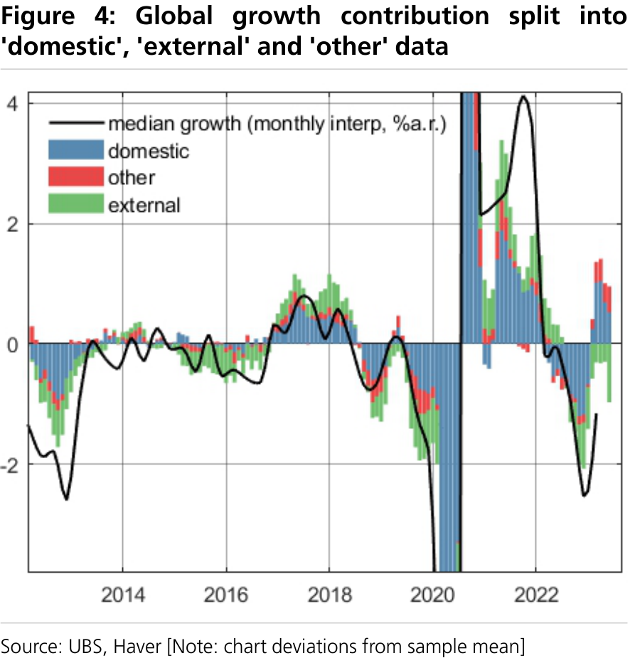
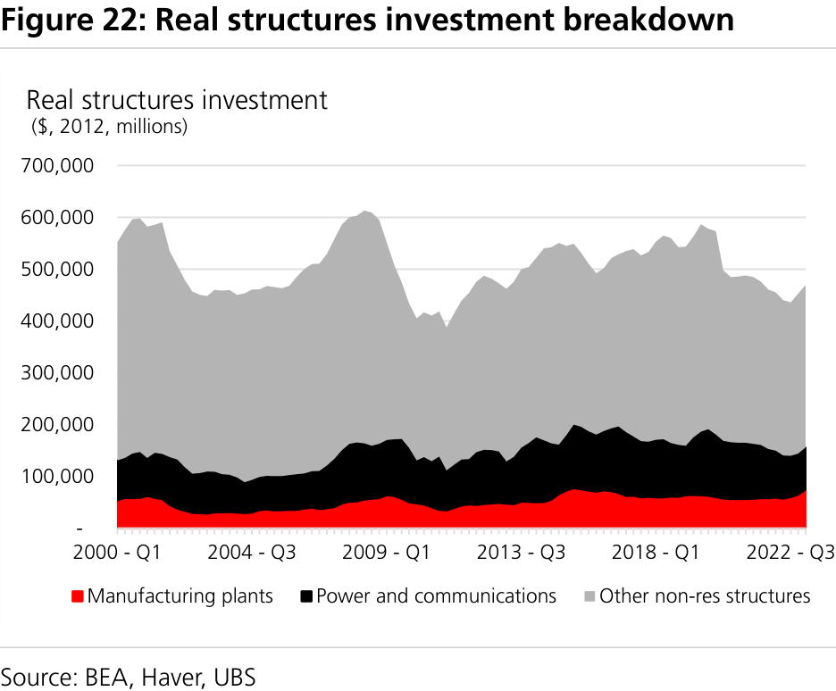
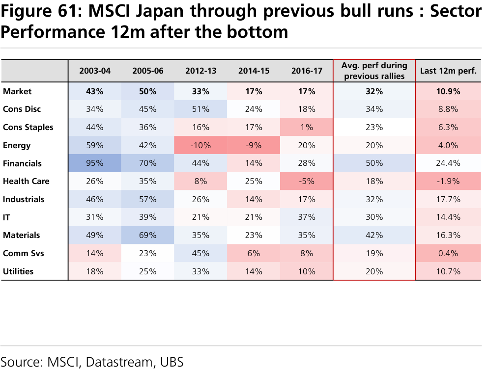

a b
Global Economics & Strategy The Compendium - the 10 toughest client questions we've fielded
Using our frameworks to answer the toughest investor questions
In this note, Team UBS tackles the most difficult questions we have received from investors. Short one-page answers are used, with a few charts to make the case. A summary of the highlights can be found on pages 2-3.
The 10 questions are:
1. Is global growth momentum fading again?
2. Can the recovery in real wages come to the (consumption) rescue?
3. Are profits in Europe really that much stronger than in the US?
4. Can US construction prevent a recession?
5. Is the global reopening running out of steam?
6. What next to watch with the dollar downcycle?
7. How much is QT hurting US and Euro rates markets?
8. How much stimulus will we get from China and will it matter?
9. How far is global trade from bottoming?
10. Can Japanese equities decouple from global equities?
Global Research and Evidence Lab
Economics
Global
====================================================================================================
Global Economics & Strategy
Summary
1. Is global growth momentum fading again?
Our global now-cast model (320 data series across 28 EM and DM economies) is currently tracking global growth at 2.4% annualized, down from 3.9% in April. The hard data is a little weaker (2.3%) than that implied by consumer and business surveys (2.6%), but the hard data accounts for most of the deterioration in the growth tracking. ‘External’ data has taken another step down last month, but there is also a softening in ‘domestic’ data, which had driven the growth surge earlier this year. On the whole, growth momentum is fading though less than might have been expected given contracting global trade, monetary tightening and negative real wage growth.
2. Can the recovery in real wages come to the (consumption) rescue?
Global real consumption is running 1.3pp below its long run average, in part because of the inflation-induced real disposable income shock. But with inflation declining, the 1- 1½pp loss of purchasing power should start to reverse over the next three quarters. Although most of the real wage gains historically show up in consumption, it is normal for there to be significant wage-consumption divergence. Our forecast assumes that most of the forthcoming real wage gains get eaten up by higher debt service, reduced fiscal transfers, and are needed to replace borrowing and consumption out of excess saving. Hence the acceleration in real consumption lags over coming quarters.
3. Are profits in Europe really that much stronger than in the US?
Eurozone profits (national accounts) are contributing more to inflation than in the US, but under most definitions are not out of line with history, nor are they accelerating. The gap between Eurostoxx profits and national accounts profits is now historically wide, with Eurostoxx 53% above 2019 levels and 20pp ahead of S&P profits. The more relevant unit profits confirm the relative profit resiliency for Europe, with real profits just slightly above the pre-pandemic trend line in Europe, whereas in the US they are 9pp below trend, falling and now essentially flat to 2019 levels. We show the close link between nominal GDP and profits, confirming the earnings vulnerability to the slowdown we forecast.
4. Can US construction prevent a recession?
Likely not, because orders of magnitude involved are wrong. In real (2012) dollars, the current year-on-year swing in manufacturing plant construction, supported by the Chips Act, is worth $20bn. In contrast, budget cuts implied by the recent debt ceiling agreement are worth $55bn for FY24 and student loan repayment $80bn upon resumption in the same real dollars. More generally, non-residential structure investment is 2.5% of GDP, while consumer spending is 70%. Spending behavior is the most important determinant of the expansion.
5. Is the global reopening running out of steam?
Goods and services spending are still not back to their pre-pandemic trend, and it appears the movement has stalled. Aggregate global services spending is around 5% below trend and goods spending about 3% above. Only about ¼ of countries have seen aggregate real consumption fully return to trend, while employment levels are also still below trend. Part of the explanation is the decline in real disposable income due to high inflation. Another part of the explanation is changes in work patterns: real US services spending is depressed for household care and clothing services, motor vehicles and ground transportation. On the goods side, all major spending categories are above trend except for household furnishing which surged in the pandemic and have now fallen back.
6. What next to watch with the dollar downcycle?
UBS Research
====================================================================================================
While the dollar is down 12% since its September peak, investors are still questioning whether we have entered a new regime. USD moves in the last few months mirror the 2002 pattern when the USD slid despite equities falling and fading correlations with short-term rates. With the Fed tightening cycle possibly ending this week, risk to short- term rates should be significantly to the downside judging by previous patterns. Should appetite for non-US assets start to build, institutional investors with pro-cyclical domestic currencies will be prompted to cover some of their FX risk, further lifting local currencies. We recommend remaining short USD across the board, but particularly against EUR, JPY and GBP.
7. How much is QT hurting US and Euro rates markets?
Cyclical risk will likely remain the primary driver of curves and spreads in the years to come despite increasing supply as a result of QT and increasing budget deficits. The macro impacts are likely to come from duration risks; in the US mostly the eventual reduced reliance on Tbill issuance, and MMF reform (with a significant flow from Prime MMF to Government MMF) will likely mute the impact. We expect supply strains mostly in ‘25/’26. In the Eurozone, duration risk is likely flat in 2024 relative to 2023, as smaller deficits will be offset by termination of APP reinvestment. Aided also by NGEU funds, we expect supply pressures to bite in the US before they do in Europe.
8. How much stimulus will we get from China and will it matter?
China's economic recovery waned in Q2 due to lack of credit for developers, weak home buyer confidence, weak global demand, and an absence of additional easing. The July Politburo meeting signalled a more supportive stance for the 2nd half of the year, calling for faster LG bond issuance, proactive fiscal policy and more use of 'aggregate monetary policy. There is also a notable shift in tone on property policy. On the fiscal front, we expect about 2% GDP in fiscal easing in H2 after a 1% GDP contraction in H1, while monetary policy likely aims to accelerate credit growth by about 1pp. These measures we think are sufficient to push quarterly growth back up to 4-4.5% in H2, but with import volume growth of only 1% there is limited spillover to the rest of the world.
9. How far is global trade from bottoming?
Roughly 80% of the global trade slowdown was due to prices and 20% to volumes. We project trade deflators to turn positive in H2, adding about 4pp to global export growth. Volume weakness has been concentrated in Europe and Asia, but there are signs that Asia’s weakness is subsiding. By product, the tech cycle has contributed greatly to the weakness, while clearing auto has been a source of strength. We forecast a sizeable tech sector rebound in H2 but with export orders across all sectors still 1½ stdev below normal we need a stronger DM demand recovery before exports can break decisively higher.
10. Can Japanese equities decouple from global equities?
Japanese equities have managed positive returns only 22% of the time when US stocks were falling. But the context today looks similar to what it was during these 22% of times. Japan’s expected nominal GDP over the coming 2y is 3x the average over the last 10y making us confident of a continued cyclical recovery in TPX earnings even as US and European earnings are likely to be revised down. When compared with peers globally, or with performance in previous bull runs in Japanese stocks, Japan’s IT, Consumer Discretionary and Industrials still have room to run. We would recommend taking this exposure unhedged. We expect $JPY at 120 at year end. TPX’s positive beta to $JPY has shifted down to close to 0 from 0.95 through Abenomics.
====================================================================================================
Global Economics & Strategy
1. Is global growth momentum fading again?
After the surprising global growth surge in Jan/Feb (see here ), economic momentum is fading again. Despite some notable pockets of resilience in the US (see the later essay: Can US construction prevent a recession? ) we are currently tracking median global growth at 2.4% (qoq, a.r.), down from 3.9% at the end of April. This estimate is based on having 100% of the soft (survey) data in hand for Q2, but 92% of the May hard data, and 34% of the June data (currently skewed towards autos, exports and employment). In Figure 1 Global growth nowcast at 2.4% in June. , the nowcast overstated growth momentum in Q1 (tracking for Q1 was 4%
vs the actual of 1.7%), gained some initial speed into Q2, but then faded fast since.
To verify what is going on under the hood, we can slice our nowcast along various data dimensions. We track 320 monthly data series from 28 economies: 240 hard and 80 soft series, covering production, employment, retail, construction, capex, autos, and consumer and business surveys, including PMIs. Our nowcast methodology is simpler than our pre-pandemic version: (i) we smooth the monthly data, (ii) interpolate quarterly GDP growth at a monthly frequency, (iii) regress the monthly series on the 1st principal component of the transformed data with robust techniques to downplay the effects of the pandemic on regression fit.
Figure 2 'Hard' and 'soft' nowcasts both weakening. shows the implied growth rates from nowcasting with 'hard' and 'soft' data separately-- 2.3% and 2.6% in June, respectively. The soft nowcast fell earlier than the hard one in '22 and bounced back sooner in the 23Q1, but the most recent downswing has been sharper in the latter. Within hard data, a gap has opened between the G3 (US, Eurozone, China) which has lost momentum of about 1 standard deviation in the last two months, and the rest of the world (RoW) where the data has held up (not shown in charts). Soft data momentum has faded in both groups, but to a lesser extent than hard. Figure 3 Global growth contributions (deviations from the m ean): hard vs soft data shows the relative contribution of each bucket to the global nowcast (estimated
on the joint data set), as deviations from the sample mean. Essentially, the bulk of momentum loss is due to the hard data. We normally take a bit more signal from that given that the hard data model has a lower root mean squared error.
The next split of the data is into 'external' (e.g. manufacturing and production are heavily trade dependent as are, of course, trade data themselves), 'domestic' (largely services, employment), and 'other' data (difficult to categorize, such as business confidence indexes). As Figure 4 Global growth contribution split into 'dom estic', 'external' and 'other' data shows, the global manufacturing/trade weakness
seemed to have ratcheted down last month, but 'domestic' data is also softening. An example of that, is for instance, the near stall in hiring in some of the reopening sectors in the US , the further sequential softening of property sales in China, as well as some of the service sector PMI deterioration in Europe. At some level that's more notable, given that 'domestic' data drove the growth acceleration earlier this year, and is where much of the perceived resilience is (tight labour markets, reopening dynamics).
In Figure 5 Global growth: hard data contributions , we divide the hard economic data by category. The main change the last month is that production data became noticeably worse, construction started to contribute negatively again (after having been neutral for a few months) and the positive contribution from labor and service sector variables faded a bit. There has been little overall change in consumer or auto contributions. Relative to history, the consumer variable contributions remain historically elevated, while the labour market variables appear to have normalized, and production is at historically weak levels. We discuss separate in Essay 9 whether the global trade cycle is close to bottoming here.
Finally, we decompose the soft data in Figure 6 Global growth: soft data vs global orders. , where the most striking feature is how global PMI orders - which we have argued are the best single indicator of global momentum -- are far weaker than the other soft data. Consumer optimism remains historically high, in sharp contrast to mid-last year when inflation was surging, while PMI orders seem to be fading again. PMI orders are among the most predictive of the survey data we track, and weak order books could portend further production weakness once backlogs are cleared ( e.g. European auto order books are down ~20% YTD ).
Overall, the global growth picture is consistent with continued softening, but the implied numbers appear unexpectedly strong, given the ongoing monetary tightening, real disposable income drag from high inflation, and contracting global trade.
UBS Research
Pierre Lafourcade
Arend Kapteyn
Global growth is tracking at 2.4%, down from 3.9% in April.
We track 320 data series across 28 EM and DM economies as part of our global now-cast model.
Global hard data implies 2.3% annualized growth vs 2.6% implied by consumer and business surveys. Hard data accounts for most of the deterioration in the recent growth tracking .
'External' data has taken another step down the last month, but there is also a softening in 'domestic' data, which had driven the growth surge earlier this year.
In the hard data, construction has started to contribute negatively again, the positive contribution from labour and service sectors is fading a bit, and production has deteriorated further.
Global PMI orders data remain exceptionally weak compared to other surveys.
Growth momentum is fading though less than expected given contracting global trade, monetary tightening and real disposable income drag.
====================================================================================================
Figure 1: Global growth nowcast at 2.4% in June.
Figure 2: 'Hard' and 'soft' nowcasts both weakening.
Figure 3: Global growth contributions (deviations
Figure 4: Global growth contribution split into
Figure 5: Global growth: hard data contributions
Figure 6: Global growth: soft data vs global orders.
====================================================================================================
2. Can the recovery in real wages come to the (consumption) rescue?
Arend Kapteyn
Global real consumption growth is running 1.3pp below its long-run average, in part because of the inflation-induced real disposable income shock.
But with inflation now declining, the 1-1½pp loss of purchasing power should start to reverse over the next three quarters.
The averages hide significant dispersion, with Europe posting the most negative real wage growth vs history, while a few others (China, Turkey, Brazil) already have real wages running above pre-pandemic levels.
Although most of the real wage gains historically show up in consumption, it is normal for there to be significant real wage- consumption divergence.
Our forecast assumes that most of the real wage gains in our forecast get eaten up by higher debt service, reduced fiscal transfers, and are needed to replace borrowing and consumption out of excess saving; hence the acceleration in real consumption lags over coming quarters.
====================================================================================================
Figure 7: DM nominal vs real wage growth
Figure 8: Nominal wages have mostly tracked CPI higher
Figure 9: Nominal wage growth by location
Figure 10: Real wage growth by location

Figure 11: Real consumption vs real disposable income
Figure 12: Real wages vs consumption (10y averages)
====================================================================================================
3. Are profits in Europe really that much stronger than in the US?
Arend Kapteyn
Sean Simonds
Sutanya Chedda
Gerry Fowler Anna Titareva
Eurozone profits are contributing more to inflation than in the US, but under most definitions are not actually accelerating. Real profits in Europe are back to trend (8% above pre-pandemic) while US profits are falling and 9% below trend.
Profits closely track nominal GDP shifts, though for listed equities the relationship is looser but also higher beta.
Figure 13: S&P vs US economy profits
Figure 14: Eurostoxx vs Eurozone

====================================================================================================
Figure 15: US - contributions to inflation
Figure 16: Eurozone - contributions to inflation
Figure 17: US real profits and wages vs trend
Figure 18: Eurozone real profits and wages vs trend
Figure 19: Nominal GDP vs profits US
Figure 20: Nominal GDP vs Eurozone profits
====================================================================================================
4. Can US construction prevent a recession?
Jonathan Pingle
Pierre Lafourcade
Can construction activity driven by recent fiscal measures drive outsized growth on their own? We think not, because orders of magnitude are wrong.
In real (2012) dollars, the current year-on-year swing in manufacturing plant construction is about $20bn.
By comparison, the debt ceiling agreement is worth $55bn of real cuts in fiscal year 2024 and the student loan repayment scheme $80bn of real transfers at an annual rate upon resumption.
Employment in the broad construction sector is 7% of total employment, too small a share to offset average recessionary-level payroll losses elsewhere.
Consumer spending is by far the largest component of activity, and saving and credit dynamics will likely dwarf any effect of construction on the contour of overall growth.
====================================================================================================
Figure 21: The rebound in manufacturing, power & communications building
Figure 22: Real structures investment breakdown
Figure 23: Brookings/Hutchins fiscal impact estimate
Figure 24: Single family building activity has perked up,
Figure 25: Employment in construction is too small to
====================================================================================================
5. Is the global reopening running out of steam?
Alan Detmeister Arend Kapteyn
Goods and services spending are still not back to their pre-pandemic trend, and it appears the movement has stalled.
Aggregate global services spending is around 5% below trend in real terms, while goods spending is 3%
Only about ¼ of countries have seen aggregate real consumption fully return to its pre-pandemic trend.
Employment levels are also below their pre-pandemic trend.
Part of the explanation is the decline in real disposable income, due to high inflation.
Another part of the explanation is changes in work patterns: real US services spending remains depressed for household care and clothing services, motor vehicle services, and ground transportation
On the goods side, all major spending categories in the US are still furnishings, which surged in the pandemic but is now back below trend.
====================================================================================================
5. Is the global reopening running out of steam?
Alan Detmeister Arend Kapteyn
Goods and services spending are still not back to their pre-pandemic trend, and it appears the movement has stalled.
Aggregate global services spending is around 5% below trend in real terms, while goods spending is 3%
Only about ¼ of countries have seen aggregate real consumption fully return to its pre-pandemic trend.
Employment levels are also below their pre-pandemic trend.
Part of the explanation is the decline in real disposable income, due to high inflation.
Another part of the explanation is changes in work patterns: real US services spending remains depressed for household care and clothing services, motor vehicle services, and ground transportation
On the goods side, all major spending categories in the US are still furnishings, which surged in the pandemic but is now back below trend.
Figure 26: Global (ex-China) real services consumption spending remains below its pre-pandemic trend
Figure 27: Overall consumption is below its pre-pandemic
Figure 28: Employment is moving further below its
Figure 29: US overall real consumption expenditures
Figure 30: US spending on financial services spending is
Figure 31: US spending on household furnishings is weaker
====================================================================================================
6. What next to watch with the dollar downcycle?
Yvan Berthoux James Malcolm
Vassili Serebriakov
While the dollar is down 12% since its September peak, investors are still curiously questioning whether we have finally entered a new regime.
USD moves seen in the last few months mirror the pattern from 2002 when the dollar slid in spite of falling equities and fading correlation with short-term rates.
With the Fed likely to terminate its tightening cycle this week with a final 25bps hike, risks to the funds rate should be skewed to the downside, at least judging by previous patterns .
Should appetite for non-US assets start to build, institutional investors with pro-cyclical domestic currencies will be prompted to cover some of their FX risk, further lifting local currencies in a virtuous spiral.
We recommend remaining short USD across the board, but particularly against EUR, JPY and GBP.
====================================================================================================
6. What next to watch with the dollar downcycle?
Yvan Berthoux James Malcolm
Vassili Serebriakov
While the dollar is down 12% since its September peak, investors are still curiously questioning whether we have finally entered a new regime.
USD moves seen in the last few months mirror the pattern from 2002 when the dollar slid in spite of falling equities and fading correlation with short-term rates.
With the Fed likely to terminate its tightening cycle this week with a final 25bps hike, risks to the funds rate should be skewed to the downside, at least judging by previous patterns .
Should appetite for non-US assets start to build, institutional investors with pro-cyclical domestic currencies will be prompted to cover some of their FX risk, further lifting local currencies in a virtuous spiral.
We recommend remaining short USD across the board, but particularly against EUR, JPY and GBP.
Figure 32: USD patterns mirror the 2002 turn
Figure 33: … when EUR rose regardless of rate differentials
Figure 34: Current versus 'false' USD turns
Figure 35: US CPI has stolen the show in FX until now
Figure 36: Divergence craters between GDP and GDI (real)
Figure 37: US rate risks soon skewed to the downside
====================================================================================================
7. How much is QT hurting US and Euro rates markets?
Mike Cloherty
Emmanouil Karimalis
Cyclical risk will likely remain the primary driver of curves and spreads in the years to come despite increasing supply as a result of QT and increasing budget deficits
The macro impacts of supply are likely to come from duration risk that the market should absorb
Supply strains are likely to be felt in late 2025/2026
Duration risk in Eurozone is likely to be flat in 2024 relative to 2023 as impact of smaller deficits would be offset by termination of APP reinvestments
Supply burden is likely to hit earlier in the US than in Europe
====================================================================================================
Figure 39: ACM 10yr term premium still low
Figure 38: Budget deficit in $bn and as % of GDP,
Figure 41: Euro-area budget deficits in €bn and as %
Figure 40: US private supply shock: monthly gross
Figure 43: Falling term-premia in Eurozone are associated
Figure 42: EUR quarterly supply: issuance adjusted for QE/
====================================================================================================
8. How much stimulus will we get from China and will it matter?
Tao Wang
China's economic recovery has waned in Q2 due to lack of credit for developers, weak confidence for home buyers, weak global demand, and absence of additional easing.
The Politburo meeting signalled a more supportive stance for the 2nd half of the year, calling for faster LG bond issuance, proactive fiscal policy and more use of 'aggregate monetary policy'.
There is a notable shift in tone on property policy.
On the fiscal front, we expect about 2% GDP in fiscal easing in H2 after a 1% GDP contraction in H1.
Monetary policy will aim to accelerate credit growth by about 1pp.
These measures we think are sufficient to push quarterly growth back up to 4-4.5% in H2, but with import volume growth of only 1% there is limited spillover to the rest of the world.
====================================================================================================
8. How much stimulus will we get from China and will it matter?
Tao Wang
China's economic recovery has waned in Q2 due to lack of credit for developers, weak confidence for home buyers, weak global demand, and absence of additional easing.
The Politburo meeting signalled a more supportive stance for the 2nd half of the year, calling for faster LG bond issuance, proactive fiscal policy and more use of 'aggregate monetary policy'.
There is a notable shift in tone on property policy.
On the fiscal front, we expect about 2% GDP in fiscal easing in H2 after a 1% GDP contraction in H1.
Monetary policy will aim to accelerate credit growth by about 1pp.
These measures we think are sufficient to push quarterly growth back up to 4-4.5% in H2, but with import volume growth of only 1% there is limited spillover to the rest of the world.
Figure 44: Property activities fell sharply after a notable rebound in Q1
Figure 45: Weakening global demand saw China’s exports
Figure 46: Actual fiscal stance in H1 2023 tightened; expect
Figure 47: China has limited explicit government debt, but
Figure 48: More credit support is necessary in H2 to ensure
Figure 49: Infrastructure FAI to offset some of the
====================================================================================================
9. How far is global trade from bottoming?
Arend Kapteyn
Manik Narain William Deng
Roughly 80% of the global trade slowdown was due to prices; and 20% to volumes. We project trade deflators, which currently still subtract 4pp from global export growth, to turn positive in H2-23.
Volume weakness has been concentrated in Europe and Asia, but there are signs that Asia's weakness is subsiding.
By product, the tech cycle has contributed greatly to the weakness, while backlog clearing in the auto sector has been a source of strength.
We forecast a sizeable tech cycle rebound starting in H2, but with global export orders across all sectors running 1½ stdev below normal we need a stronger DM demand recovery before exports can decisively turn positive.
Figure 50: World import volume growth has been

Figure 51: The recent improvement in export
====================================================================================================
9. How far is global trade from bottoming?
Arend Kapteyn
Manik Narain William Deng
Roughly 80% of the global trade slowdown was due to prices; and 20% to volumes. We project trade deflators, which currently still subtract 4pp from global export growth, to turn positive in H2-23.
Volume weakness has been concentrated in Europe and Asia, but there are signs that Asia's weakness is subsiding.
By product, the tech cycle has contributed greatly to the weakness, while backlog clearing in the auto sector has been a source of strength.
We forecast a sizeable tech cycle rebound starting in H2, but with global export orders across all sectors running 1½ stdev below normal we need a stronger DM demand recovery before exports can decisively turn positive.
Figure 52: Global trade: flat in volume terms; contracting in value terms
Figure 53: Global trade deflators are running at -4% but
Figure 54: The tech cycle has been an important driver of
Figure 55: But our equity colleagues project tech sales to
Figure 56: The early EM reporters suggest stabilization, but
Figure 57: And PMI export orders are still running 1½
====================================================================================================
10. Can Japanese equities decouple from global equities?
Are Japanese equities a cyclical trade or a structural one?
Bhanu Baweja James Malcolm
Karen Hizon
Masamichi Adachi
Japanese equities managed positive returns only 22% of the time when US stocks were falling
But today looks more like the times when Japanese equities did manage to buck a global equities decline.
Japan’s expected nominal GDP over the coming 2y is 3x the average over the last 10y.
Foreigners buying, locals selling. Small caps have gone nowhere.
A retail re-allocation to Japanese equities needs better corporate governance and higher long term inflation. The former will likely come, but we are less certain about the latter.
====================================================================================================
Figure 58: Topix 3m total returns in times of SPX decline
Figure 59: Japan corporate profits as % of GDP and
Figure 60: MSCI Japan, US and Europe nominal GDP growth
Figure 61: MSCI Japan through previous bull runs : Sector
Figure 63: MSCI Japan Large Cap and Small Cap indices
Figure 62: Local retail & institutions and Foreign net
====================================================================================================
Valuation Method and Risk Statement
====================================================================================================